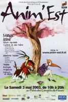
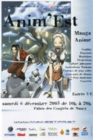
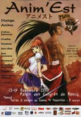
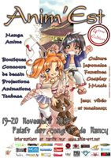
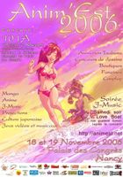
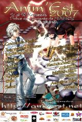
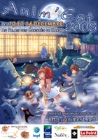

La première édition d'Anim'Est date de 2003. Organisée par les Mines, cette convention se déroule au Palais des Congrès de Nancy. L'Esial rejoint Anim'Est dès la deuxième édition. L'ICN a été brièvement présente au sein de l'organisation d'Anim'Est. À ses débuts, la convention ne durait qu'une seule journée. Dès la troisième édition, la convention est passée à deux jours. Le succès étant au rendez-vous, la transition s'est faite sans problème.
Affiches des éditions précédentes:
      Mais c'est quoi vraiment Anim'Est dans les Mines?
Anim'Est, c'est une équipe soudée d'un vingtaine d'étudiants qui, tout au long de l'année, s'échinent à préparer cet événement. Au début fortement majoritaires car fondateurs, les mineurs sont de moins en moins présents parmi les organisateurs. Cependant, Anim'Est est une vitrine de l'Ecole des Mines car nombre de visiteurs sont encore persuadés qu'Anim'est est une assoce des Mines. Pour vous rendre compte de la situation actuelle allez-vous voir ici ou dans les couloirs de l'Ecole si vous nous croisez.
Mais pourquoi on ne voit jamais Anim'Est aux Mines?
La plupart des réunions ont lieu à l'Esial, école d'informatique située près du carrefour de Vandoeuvre. Il est tout de même à noter qu'étant formés en informatiques, ils font la plus grande partie (pour ne pas dire la totalité) des logiciels utilisés lors de la convention. Bon évidemment, les logiciels tels que les simulateurs des arcades DDR sont préfaits mais bon...on peut s'attendre à tout.
Les pôles à Anim'Est
Le staff d'Anim'Est se répartit selon les pôles suivants. Le surnom entre parenthèses est le surnom du respo pour l'édition 2009.
A Anim'Est, c'est le staff qui fait les repas. Sushi, Onigri, Maki...Voilà ce qui était au menu l'an dernier. Les Bentôs font partis du déjeuner classique des japonais. Sorte de boîtes subdivisées en plusieurs sous-compartiments, un Bentô rassemble plusieurs "plats" divers et variés. L'important est de ne pas lasser le palais d'où la faible quantité et la grande diversité. Cette manière de déguster est typiquement japonais. C'est comme un fast food sain. Et c'est dans les cuisines du Palais que le staff concocte ce petit trésor gastronomique pour le plus grand plaisir des visiteurs (vu le nombre de rupture de stock).
C'est celui qui gère l'avancement du projet mais surtout celui qui gère le staff lors de la convention. Outre la répartition des tâches, il doit gérer les imprévus tels que les rush à la vente des billets ou à la buvette à la sortie des amphis.
A Anim'Est, les logiciels utilisés sont tous codés par le pôle logiciel. Vente/impression des tickets, gestion du dépôt vente...Tous les logiciels sont connectés à une base de donnée.
Tenir les visiteurs au courant des news (concours d'affiche, concours de cosplays), ou contacter l'Est républicain pour se faire connaître, bref la communication, c'est le boulot du pôle Comm'. Logique? Oui mais derrière tout ça, il y a énormément de travail! Entrer en contact avec les boutiques peut aussi faire partie de ses tâches (mais là c'est si parce que le respo boutique s'autorise un chômage temporaire). Bref, faire connaître Anim'Est à Nancy, en Lorraine et voire plus loin et bien sûr tenir les fans au courant (facebook,forum, etc...), c'est tout un art.
Stand thé, trouver des ikebana ou encore des démonstrations d'art martiaux est de leur ressort. Le pôle culture ou un des pôle les plus importants d'Anim'Est car Anim'Est se veut d'être une vitrine de la culture nippone. Le jour de la convention, il te feront goûter des thés fabuleux, te faire découvrir les dessous de l'histoire de ce pays de l'Extrême-Orient.
Les Boutiques! Que serait Anim'Est sans les stands qui proposent, parfois en exclusivité, les affiches Final Fantasy, les T-shirts Full Metal Alchemist, le dernier Naruto, les Cd de J-music et tout autre goodies? Contacter ces boutiques, les rassembler (et leur trouver une place dans la convention car il n'en reste plus beaucoup!), c'est son boulot. C'est le pôle qui gère alors tout un étage du Palais des congrès!